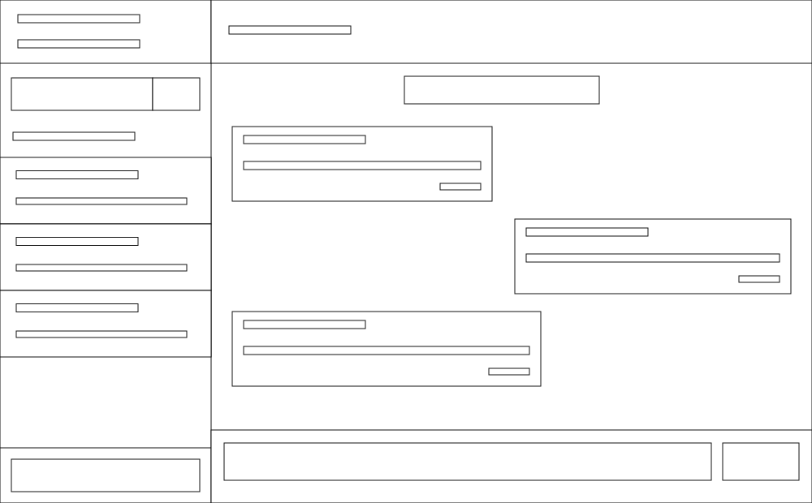
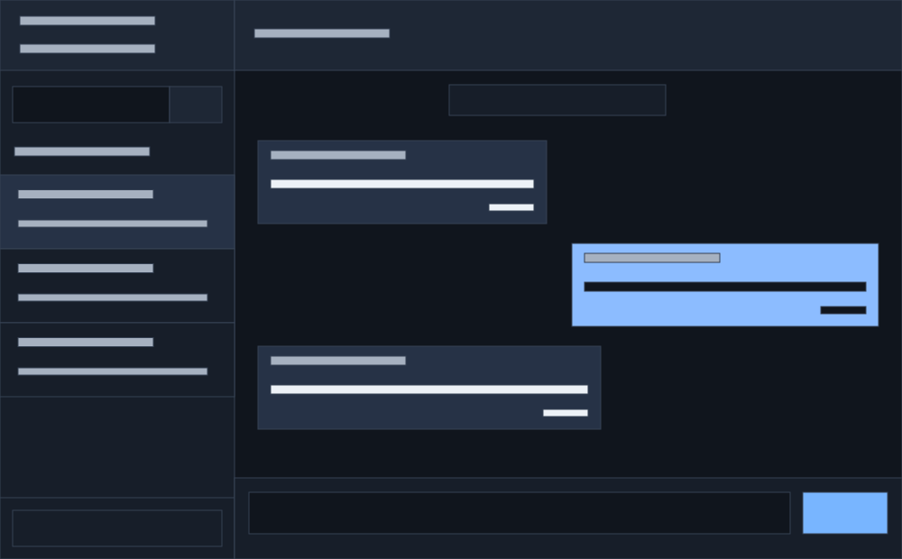
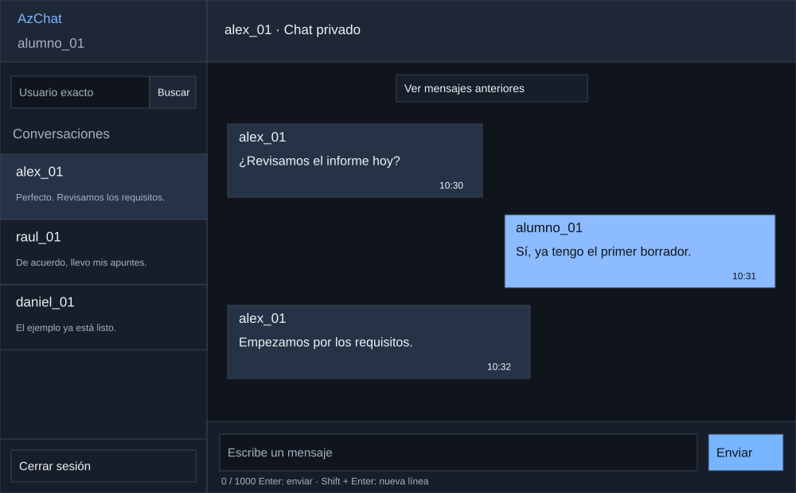
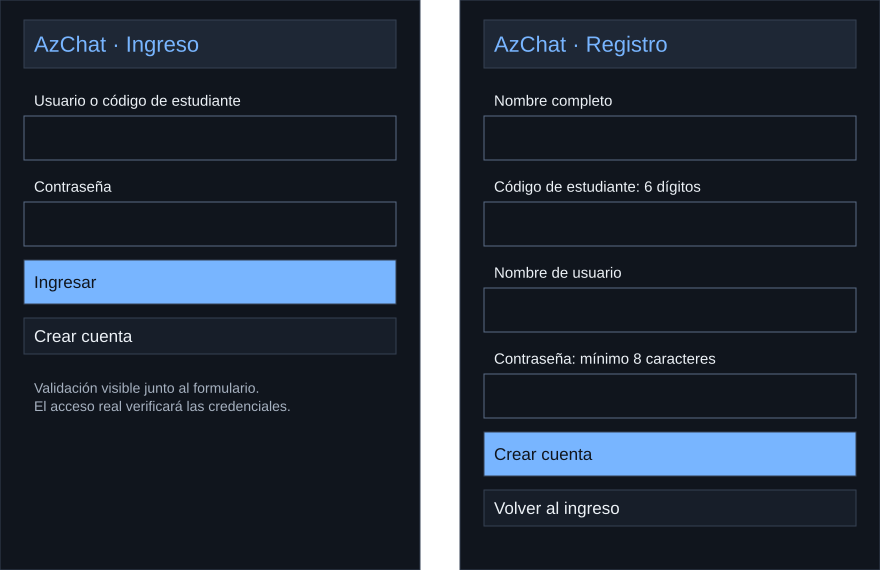
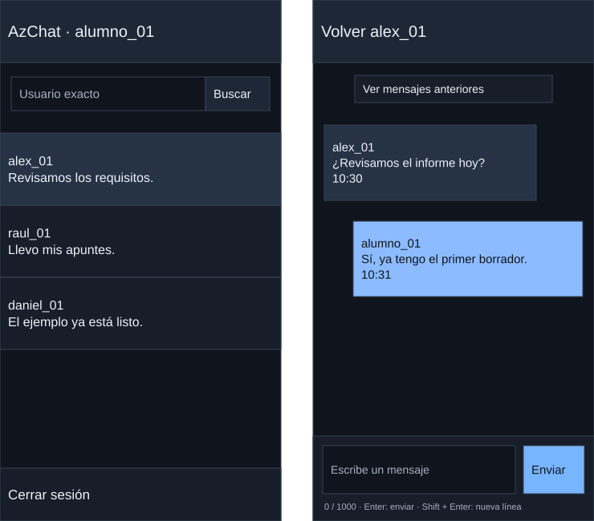

En pocas palabras
La interfaz parte de cuadros en blanco y negro, incorpora colores y finalmente presenta conversaciones de ejemplo. Utiliza paneles rectangulares y unidos.
- En computadora se ven la lista y el chat; en celular se muestra una vista a la vez.
- El prototipo utiliza datos ficticios y permite explorar la navegación.
Objetivo del diseño
AzChat presenta una interfaz sencilla para registrarse, ingresar y conversar en privado. Este documento desarrolla el diseño en tres niveles de detalle a partir de una referencia visual de tonos grafito y azul. Las etapas permiten entender cómo se pasa de la estructura al contenido final.
Los paneles son rectangulares y están unidos por divisiones finas. La lista de conversaciones queda a la izquierda y el chat a la derecha. Los controles tienen texto directo y los mensajes propios se distinguen por el color azul y su alineación a la derecha.
1. Estructura en blanco y negro
El primer boceto utiliza únicamente cuadros y líneas. Define el espacio de la búsqueda, la lista, el encabezado, el historial y la escritura, sin incorporar colores ni conversaciones.

2. Aplicación del color
Se conserva la misma distribución. El grafito organiza las superficies y el azul identifica la conversación seleccionada, los mensajes propios y la acción de enviar. Los cuadros todavía representan contenido pendiente.

3. Conversaciones y contenido
El último boceto incorpora nombres de usuario, mensajes, horas y etiquetas. Los alias alumno_01, alex_01, raul_01 y daniel_01 son datos ficticios para mostrar la interfaz; no representan cuentas registradas. Las conversaciones y cada mensaje muestran el nombre de usuario.

Ingreso y registro
El ingreso solicita usuario o código de estudiante y contraseña. El registro solicita nombre completo, código, usuario y contraseña. Cada campo conserva una etiqueta visible y los errores indican qué debe corregirse. La recuperación de contraseña queda fuera de la primera versión.

Adaptación al celular
En pantallas de hasta 700 píxeles se muestra una vista a la vez. Al elegir una conversación se abre el chat; el botón Volver permite regresar a la lista. El borrador se mantiene al cambiar de conversación durante la vista de ejemplo.

Comportamiento de los controles
| Acción | Comportamiento |
|---|---|
| Buscar destinatario | Nombre de usuario exacto, sin distinguir mayúsculas. Si ya existe una conversación con esa persona se abre la misma. |
| Escribir | Enter envía; Shift + Enter agrega una nueva línea. También puede utilizarse el botón Enviar. |
| Validar mensaje | Admite hasta 1000 caracteres. Un texto vacío o compuesto solo por espacios se rechaza y se conserva para corregirlo. |
| Leer mensajes | Cada mensaje muestra usuario y hora. El historial permite desplazarse y solicitar mensajes anteriores. |
| Envío fallido | El texto se conserva y se ofrece Reintentar. Recuperar la conexión no envía mensajes automáticamente. |
| Cerrar sesión | Regresa al ingreso. En el sistema construido, la sesión finalizará también al cumplir 8 horas desde el acceso. |
Prototipo navegable
El prototipo permite explorar las pantallas y sus controles. Utiliza datos ficticios en memoria: no crea cuentas, no verifica contraseñas reales ni conserva mensajes al recargar. El historial persistente, las sesiones y la comunicación entre personas se implementarán en el servidor descrito en P9.
Abrir prototipo desde el ingreso · Abrir chat de ejemplo
Ver el prototipo en esta página
Para revisar el envío fallido, pulse Simular desconexión e intente enviar un texto. Después restablezca la conexión y pulse Reintentar. La búsqueda dispone de los alias de ejemplo y de kenyi_01 para abrir una conversación vacía.
Bocetos editables y revisión
Abrir archivo Draw.io con los cinco bocetos. En Draw.io seleccione Archivo → Abrir desde → Dispositivo. Cada etapa está en una página y sus cuadros y textos se pueden editar.
La metodología Ágil permite revisar estos bocetos y ajustar la interfaz antes de construir el sistema. Esta entrega corresponde al diseño de P10. P11 define el modelo de datos y P12 organiza la construcción por incrementos.
Equipo del proyecto
| Apellidos y nombres | Código |
|---|---|
| Apaza Quispe Antonio Vicente | 236876 |
| Arias Ramirez Alex | 236104 |
| Chura Chambilla Raul Cristian | 236567 |
| Escobedo Arapa Kenyi Blanca | 236171 |
| Mamani Pari Yimmy Jonathan | 237317 |
| Quispe Ramos Daniel Jhosimar | 236568 |
| Roque Mamani Vidman Ruis | 236232 |
| Vidal Fuentes Jordy Anthony | 236535 |